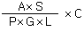
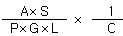
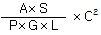
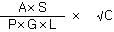
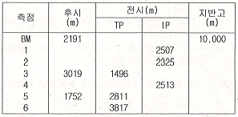
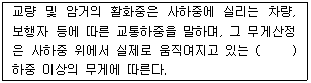

산림기사 (2014-05-25 기출문제)
1과목: 조림학
1. 낙엽, 낙지 등에 의한 임지피복에 대한 설명으로 옳지 않은 것은?
- 강우에 의한 표토의 침식과 유실을 막는다.
- 임지피복이 잘 된 지역일수록 모수림 작업의 성공확률이 높다
- 토양에 유기물을 공급하여 양료를 증가시켜 수목의 생장을 돕는다
- 토양 수분의 증발을 막고 표토의 온도를 조절하여 토양 미생물을 보호한다.
(정답률: 77%)

2. 종자의 정선에서 수선법을 주로 사용하는 수종은?
- 소나무, 밤나무, 향나무
- 잣나무, 향나무, 상수리나무
- 밤나무, 호두나무, 상수리나무
- 일본잎갈나무, 소나무, 비자나무
(정답률: 49%)
3. 묘목 잎의 엽록소 형성에 미치는 영향이 가장 작은 영양소는?
- B
- N
- Fe
- Mg
(정답률: 61%)
4. 무성번식에 대한 설명으로 옳지 않은 것은?
- 실생묘에 비해 대량생산이 쉽다.
- 모수의 특성을 그대로 이어 받는다.
- 결실이 불량한 수목의 번식에 적합하다.
- 생장이 빠르고 묘목 양성기간이 단축된다.
(정답률: 54%)
5. 광합설에 대한 설명으로 가장 옳은 것은?
- 토양의 수분포텐셜과는 무관하다.
- 양수는 음수에 비하여 광보상점이 낮다.
- 양엽이 음엽에 비하여 광포화점이 높다.
- 녹색 파장영역의 빛이 광합성에 효율적이다.
(정답률: 75%)
6. 이태리포플러와 유연관계가 가장 가까운 것은?
- 왕버들
- 미루나무
- 황철나무
- 은수원사시나무
(정답률: 76%)
7. 수목의 뿌리 부근 토양에서 볼수 있는 토양미생물 중 유기물의 존재를 필요로 하지 않는 것은?
- Aerobacter
- Azotobacter
- Clostridium
- Nitrosomonas
(정답률: 53%)
8. 중림작업에 대한 설명으로 옳은 것은?
- 교림작업과 왜림작업의 혼합립 작업이다.
- 교림작업과 죽림작업의 혼합림 작업이다.
- 교림작업과 순림작업의 혼합림 작업이다.
- 교림작업과 치수림작업의 혼합림 작업이다.
(정답률: 89%)
9. 열대우림에 대한 설명으로 옳지 않은 것은?
- 동식물의 종다양성이 높다.
- 낙엽의 분해가 빨라서 1차생산성이 낮다.
- 연중 비가 내리는 열대우림에는 상록활엽수가 우점한다.
- 토양은 화학적 풍화가 빠르고 수용성물질의 용탈이 심하다.
(정답률: 80%)
10. 다음 중 토양수분에 대한 요구도가 가장 낮은 수종은?
- 신갈나무
- 자작나무
- 버드나무
- 들메나무
(정답률: 51%)
11. 덩굴제거 방법으로 옳지 않은 것은?
- 줄기를 제거하거나 뿌리를 굴취한다.
- 약제주입기로 글라신액제를 대상 덩굴에 주입하여 고사 시킨다.
- 디캄바액제는 비선택성 제초제로 일반적인 덩굴류에 적용한다.
- 주로 칡, 다래, 머루 같은 덩굴류가 무성한 지역을 대상으로 한다.
(정답률: 74%)
12. 묘포 파종상에서 산파의 경우 파종량을 구하는 식으로 옳은 것은?(단, A = 파종상의 면적(m2), L = 득표율(묘목의 잔존율(%)), P = 순량율(%), G = 발아율(%), S = 남겨둘 묘목본수(본/m2), C = kg 당 종자 수)




(정답률: 74%)
13. 토양의 화학적 풍화작용으로 회색 또는 담색으로 되는 경향이 있으며, 습한 유기물이 쌓인 곳에서 주로 일어나는 작용은?
- 탄산염화
- 수화작용
- 가수분해
- 환원작용
(정답률: 77%)
14. 음이온의 형태로 수목의 뿌리로부터 흡수되는 것은?
- K
- Ca
- NH4
- SO4
(정답률: 80%)
15. 조림목이 간벌기에 도달할 때까지 쓸모없는 침입목 이나 성장 및 형질이 불량한 나무를 제거하기 위해 실시하는 작업으로 옳은 것은?
- 개벌
- 산벌
- 제벌
- 택벌
(정답률: 78%)
16. 학명이 Pinus densiflora for multicaulis인 수목은?
- 반송
- 곰솔
- 잣나무
- 일본잎갈나무
(정답률: 74%)
17. 다음 수목의 종자 중 저장 수명이 가장 긴 것은?
- 삼나무
- 굴참나무
- 버드나무
- 아까시나무
(정답률: 48%)
18. 가지치기에 대한 설명으로 옳은 것은?
- 벚나무는 절단면이 잘 유합된다.
- 지름 5cm 이상의 가지를 잘라낸다.
- 형질이 좋은 나무에서 우선적으로 실시한다.
- 살아있는 가지를 치는 시기는 봄부터 여름까지가 좋다.
(정답률: 72%)
19. 지하자엽형으로 발아하는 수종으로만 짝지어지 것은?
- 개암나무, 양버즘나무
- 단풍나무, 물푸레나무
- 버즘나무, 아까시나무
- 호두나무, 상수리나무
(정답률: 69%)
20. 산림토양의 표토에서 많이 나타나고 유기물이 풍부 하고 보수성과 통기성이 좋아서 수목의 생장에 가장 적합한 토양 구조는?
- 판상(platy) 구조
- 벽상(blocky) 구조
- 입상(granular) 구조
- 주상(prismatic) 구조
(정답률: 85%)
2과목: 산림보호학
21. 설해(雪害)를 예방하는 방법이 아닌 것은?
- 설해에 약한 수종의 동령단순림을 피한다.
- 삼각식재나 장방형식재의 방법을 적용한다.
- 햇빛을 차단하여 낮 동안 온도상승을 낮춘다.
- 임목생장을 건전하게 하여 설상목으로 키운다.
(정답률: 85%)
22. 한해(旱害 : drought injury)의 피해 특징으로 옳은 것은?
- 보통 52~54℃의 고온에서 원형질이 생명력을 잃는 현상
- 수피 부분에 수분 증발이 발생하면서 수피조직이 말라 죽는 현상
- 묘목이나 치수의 근부 형성층 조직이 피해 받아 고사하는 현상
- 토양의 수분, 부족으로 나무의 끝이 말라죽거나 생장이 감소하는 현상
(정답률: 65%)
23. 잣나무 털녹병의 중간 기주는?
- 송이풀
- 향나무
- 신갈나무
- 매발톱나무
(정답률: 85%)
24. 솔입혹파리 및 솔껍질깍지벌레 구제를 위하여 수간 주사에 사용되는 살충제는?
- 포스파미돈 액제
- 테부코나졸 액제
- 페니트로티온 수화제
- 디플루벤주론 수화제
(정답률: 59%)
25. 야생동물의 서식지 구성요소가 아닌 것은?
- 물
- 공간
- 먹이
- 천적
(정답률: 82%)
26. 우리나라 소나무에 피해를 주는 소나무재선충병의 매개충은?
- 알락하늘소
- 미끈이하늘소
- 솔수염하늘소
- 남방수염하늘소
(정답률: 89%)
27. 산림해충의 임업적 방제법에 속하지 않는 것은?
- 내충성 품종으로 조림하여 피해 최소화
- 혼효림 조성하여 생태계의 안정성 증가
- 천적을 이용하여 유용식물 피해 규모 경감
- 임목밀도를 조절하여 건전한 임목으로 육성
(정답률: 86%)
28. 다음 중 선충의 분류학상 위치는?
- 선형동물문
- 강장동물문
- 편형동물문
- 윤형동물문
(정답률: 85%)
29. 산림해충 중 국외로부터 국내에 침임한 해충이 아닌 것은?
- 솔나방
- 솔잎혹파리
- 미국흰불나방
- 버즘나무방패벌레
(정답률: 78%)
30. 다음 중 성충으로 월동하는 해충으로만 나열된 것은?(문제오류로 실제 시험에서는 전항 정답 처리되었습니다. 여기서는 1번을 누르면 정답 처리 됩니다.)
- 흰가루병
- 그을음병
- 점무늬병
- 잎떨림병
(정답률: 83%)
31. 병의 발생 원인이 진딧물이나 깍지벌레류와 밀접한 관계를 가지고 있는 것은?
- 흰가루병
- 그을음병
- 점무늬병
- 잎떨림병
(정답률: 80%)
32. 녹병의 방제방법으로 틀린 것은?
- 병든 나무 소각
- 중간기주 제거
- 보르도액 살포
- 주론 수화제 살포
(정답률: 66%)
33. 파이토플라스마에 의한 수병으로 옳지 않은 것은?
- 붉나무 빗자루병
- 벚나무 빗자루병
- 대추나무 빗자루병
- 오동나무 빗자루병
(정답률: 87%)
34. 흰가루병이 발생한 잎은 흰가루를 뿌려 놓은 듯한 증상이 나타난다. 이때 병원균의 포자 형태로 옳은 것은?
- 난포자
- 자낭포자
- 접합포자
- 분생포자
(정답률: 61%)
35. 오리나무잎벌레의 월동 형태와 장소는?
- 알로 지피물 밑에서
- 성충으로 땅 속에서
- 번데기로 수피 사이에서
- 유충으로 나뭇잎 아래에서
(정답률: 67%)
36. 아까시잎혹파리에 대한 설명으로 옳지 않은 것은?
- 1년에 5~6회 발생한다.
- 원산지는 북아메리카이다.
- 땅속에서 성충으로 월동한다.
- 주로 흰가루병과 그을음병을 동반한다.
(정답률: 58%)
37. 곤충의 소화기관 중 입에서 가까운 것부터 나열한 것으로 옳은 것은?
- 전위 - 인두 - 전소장 - 위맹낭
- 전위 - 인두 - 위맹낭 - 전소장
- 인두 - 전위 - 전소장 - 위맹낭
- 인두 - 전위 - 위맹낭 - 전소장
(정답률: 57%)
38. 밤나무 줄기마름병의 방제 방법으로 옳지 않은 것은?
- 내병성 품종을 식재한다.
- 질소질 비료를 많이 준다.
- 동해 및 볕데기를 막고 상처가 나지 않게 한다.
- 천공성 해충류의 피해가 없도록 살충제를 살포한다.
(정답률: 85%)
39. 온도가 높은 여름에 비교적 건조한 토양에서 피해가 큰 모잘록병균으로 옳은 것은?
- Fusarium 균
- Cercospora 균
- Microsphaera 균
- Cylindrocladium 균
(정답률: 74%)
40. 액상의 농약을 제조할 때 주제를 녹이기 위하여 사용하는 물질을 무엇이라 하는가?
- 용제
- 유제
- 유화제
- 증량제
(정답률: 56%)
3과목: 임업경영학
41. 재적이 0.5m3인 통나무 2개 가격의 합보다 재적 1m3인 통나무 1개의 가격이 훨씬 높다. 그 이유를 가장 잘 나타낸 것은?
- 형질생장
- 가치생장
- 등귀생장
- 재적생장
(정답률: 68%)
42. 임업 협업경영의 원칙으로 옳지 않은 것은?
- 공동출역
- 공동출자
- 균등관리
- 균등분배
(정답률: 50%)
43. 산림에서 임목을 벌채하여 제재목을 생산할 때 부수적으로 톱밥이 생산되는데. 이러한 두 가지 생산물의 관계를 무엇이하고 하는가?
- 결합생산
- 경합생산
- 보완생산
- 보합생산
(정답률: 63%)
44. 임업자산의 유형과 구성요소의 연결로 옳지 않은 것은?
- 유동자산 - 비료
- 유동자산 - 현금
- 고정자산 - 묘목
- 임목자산 - 산림축적
(정답률: 82%)
45. 소나무림 40년생(지위지수 10)의 현실 축적이 280m3, 임분 수확표에서의 ha당 축적이 250m3, 연간 생장 량이 10m3인 경우 Hundeshagen 이용율법으로 계산한 연간 벌채량은 얼마인가?
- 8.2m3
- 8.9m3
- 11.2m3
- 11.5m3
(정답률: 50%)
46. 어떤 산림의 ha당 축적이 2000년은 150m3, 2010년은 220m3일 때 단리에 의한 성장률은?
- 3.5%
- 3.7%
- 4.5%
- 4.7%
(정답률: 44%)
47. 감가상각비의 계산방법 중 정액법에 의한 것은?
- (취득원가-잔존가치)/추정내용연수
- (취득원가-잔존가치)×감가율
- 실제작업시간 × ((취득원가 - 잔존가치)/추정총작업시간)
- (취득원가 - 감가상각비누계액) × (감가율)
(정답률: 79%)
48. 임업경영의 생산성 원칙을 달성하기 위하여 어떤 종류의 생장량이 최대인 시기를 벌기로 결정해야 하는가?
- 총생장량
- 연년생장량
- 한계생장량
- 평균생장량
(정답률: 69%)
49. 임업의 특성 중에 입지조건이 중요시되는 이유와 가장 밀접한 관계가 있는 것은?
- 임업생산은 노동집약적이다.
- 육성임업과 채취임업이 병존한다.
- 임업노동은 계절적 제약을 크게 받지 않는다.
- 원목가격의 구성요소 중 운반비가 차지하는 비중이 높다
(정답률: 81%)
50. 말구직경 20cm, 원구직경 24cm, 재장이 2m인 통나 무의 재적을 스말리안(Smalian) 식에 의해 구한 것은?(단, 소수 넷째자리에서 반올림할 것)
- 0.024m3,
- 0.077m3
- 0.098m3
- 0.182m3
(정답률: 54%)
51. 휴양자원에 대한 설명으로 옳지 않은 것은?
- 사회적 요구에 부합하여야 한다.
- 인공적 환경요소로 정의할 수 있다
- 이용자중심형, 자원중심형 등으로 구분한다.
- 개인의 소유는 불가하여 국가가 공공기관 소유이다
(정답률: 76%)
52. 수확표 상의 흉고단면적에 대한 실제 흉고단면적의 비율을 나타내는 것은?
- 소밀도
- 입목도
- 상대밀도
- 상대공간지수
(정답률: 61%)
53. 임업이율의 성격으로 옳은 것은?
- 실질이율
- 평정이율
- 대부이율
- 현실이율
(정답률: 75%)
54. 임업소득에 대한 설명으로 옳지 않은 것은?
- 임업소득은 조림지 면적의 크기에 비례하여 증대 된다.
- 임업조수익 중에서 임업소득이 차지하는 비율을 임업의존도로 한다.
- 임업소득가계충족율은 임가의 소비경제가 임업에 의하여 지탱되는 정도를 나타낸다.
- 임업순수익은 임업경영이 순수익의 최대를 목표로 하는 자본가적 경영이 이루어졌을 때 얻을 수 있는 수익이다.
(정답률: 63%)
55. 수간석해를 통하여 계산할 수 없는 것은?
- 근주재적
- 지조재적
- 소단부재적
- 결정간재적
(정답률: 68%)
56. 임목 평가 방법에 대할 설명으로 옳은 것은?
- 유령림은 임목기망가에 의하여 평정한다.
- 장령림은 임목비용가에 의하여 평정한다.
- 벌기 이상의 성숙림은 시장가역산법에 의하여 평정한다
- 식재 직후의 임분은 원가수익절충법에 의하여 평정한다.
(정답률: 71%)
57. 숲해설의 주제를 선택할 때 바람직하지 않은 것은?
- 가능한 전문성이 높은 주제를 선택한다.
- 흥미를 유발할 수 있는 주제를 선택한다.
- 청중의 특성과 연관되어 있는 주제를 선택한다.
- 청중에게 유익한 경험을 줄 수 있는 주제를 선택한다.
(정답률: 84%)
58. 국유림경영계획 수립에 있어 경영목표의 우선순위를 결정할 때 목표들이 상충하는 경우 가장 우선하는 것은?
- 산림보호 기능
- 경영수지 개선
- 고용증진 효과
- 휴양장소 제공
(정답률: 83%)
59. 다음 중 “산림자원의 조성 및 관리에 관한 법률”에 정의된 산림의 기능으로 옳지 않은 것은?
- 수원함양림
- 산림휴양림
- 자연환경보전림
- 환경생활보전림
(정답률: 67%)
60. 원가계산을 위한 원가비교 방법으로 옳지 않은 것은?
- 기간비교
- 상호비교
- 수익비용비교
- 표준실제비교
(정답률: 49%)
4과목: 임도공학
61. 임도 설계시 각 측점의 단면적마다 절토고, 성토고 및 단면적의 물량을 기입하는 설계도는?
- 평면도
- 종단면도
- 횡단면도
- 구조물도
(정답률: 70%)
62. 실제 지상의 두 점간 거리가 100m인 지점이 지도상 에서 4mm로 나타났다면 이 지도의 축적은 얼마인가?
- 1/1,000
- 1/2,500
- 1/25,000
- 1/50,000
(정답률: 78%)
63. 수준측량에 있어서 측점6의 지반고(m)는 얼만인가?

- 8838
- 8932
- 9684
- 9933
(정답률: 51%)
64. 롤러의 표면에 돌기를 부착한 것으로 점착성이 큰 점성토나 풍화연암 다짐에 적합하며, 다짐 유효 깊이가 큰 장점을 가진 임업기계는?
- 탠덤롤러
- 탬핑롤러
- 타이어롤러
- 머캐덤롤러
(정답률: 75%)
65. 임도의 설계에서 종단면도를 작성할 때 횡,종의 축적은 얼마로 해야 하는가?
- 횡 : 1/1,200, 종 : 1/120
- 횡 : 1/1,000, 종 : 1/200
- 횡 : 1/1,000, 종 : 1/100
- 횡 : 1/1,200, 종 : 1/150
(정답률: 85%)
66. 옹벽의 안정성 검토 사항으로 옳지 않은 것은?
- 다짐
- 전도
- 활동
- 침하
(정답률: 68%)
67. 산림기반시설의 설계 및 시설기준에 따른 교량 및 암거에 대한 설명으로 다음 ( )안에 알맞은 것은?

- DB-10
- DB-12
- DB-18
- DB-20
(정답률: 81%)
68. 사리도(자갈길, gravel road)의 유지관리에 대한 설명으로 옳지 않은 것은?
- 방진처리에 염화칼슘은 사용하지 않는다.
- 노면의 제초나 예불은 1년에 한번 이상 한다.
- 횡단배수구의 물매는 5~6%를 유지하도록 한다.
- 가능한한 비가 온 후 습윤한 상태에서 노면 정지 작업을 실시한다
(정답률: 74%)
69. 산림관리 기반시설의 설계 및 시설기준에서 암거, 배수관 등 유수가 통과하는 배수 구조물 등의 통수 단면은 최대 홍수유량 단면적에 비해 어느 정도 되어야 한다고 규정하고 있는가?
- 1.0배 이상
- 1.2배 이상
- 1.5배 이상
- 1.7배 이상
(정답률: 76%)
70. 일반적으로 돌쌓기의 표준물매는 찰쌓기 구조물의 경우에 얼마로 하는가?
- 1 : 0.2
- 1 : 0.3
- 1 : 0.5
- 1 : 1
(정답률: 60%)
71. 반출할 목재의 길이가 15m, 임도의 노폭이 3m일 때 이 목재를 운반할 수 있는 최소곡선반지름은 약 얼마인가?(단, 차량의 운반 속도는 매우 느리다고 가정한다.)
- 12.3m
- 14.1m
- 18.8m
- 20.1m
(정답률: 67%)
72. 콤파스 측량으로 AB측선의 방위각을 측정하니 50° 였다. 역방위각을 구하면 얼마인가?
- 25°
- 140°
- 230°
- 320°
(정답률: 75%)
73. 임도계획의 순서로 가장 적합한 것은?
- 임도밀도계획 - 임도노선배치계획 - 임도노선선정
- 임도노선배치계획 - 임도노선선정 - 임도밀도계획
- 임도밀도계획 - 임도노선선정 - 임도노선배치계획
- 임도노선선정 - 임도노선배치계획 - 임도밀도계획
(정답률: 66%)
74. 임도의 종단물매에 대한 설명으로 옳지 않은 것은?
- 최소 물매는 3% 이상으로 설치하는 것이 좋다.
- 종단물매를 높게 하면 임도우회율이 적어진다.
- 임도 설계시 종단물매 변경은 전 노선을 조정하여 재시공하는 의미를 갖는다.
- 보통자동차에서는 설계속도의 90% 이상 정도로 오를 수 있도록 설정한다.
(정답률: 70%)
75. 임도공사에서 절개지 비탈면에 격자틀 붙이기 공법을 사용하고자 한다. 용수가 있는 곳에서의 격자틀 내부 처리 방법으로 가장 적절한 것은?
- 흙 채움
- 작은 돌 채움
- 떼붙이기 채움
- 콘크리트 채움
(정답률: 62%)
76. 흙의 입도분포의 좋고 나쁨을 나타내는 균등계수의 산출식으로 옳은 것은? (단:통과중량백분율 X에 대응하는 입경은 DX라 한다
- D50 ÷ D20
- D10 ÷ D60
- D20 ÷ D50
- D60 ÷ D10
(정답률: 74%)
77. 체인톱의 쵸크(choke) 사용방법에 대하여 옳은 것은?
- 쵸크는 항상 열어둔다.
- 초크는 항상 닫아둔다.
- 시동이 되면 쵸크를 닫는다.
- 시동하고자 할 대에는 쵸크를 닫는다.
(정답률: 56%)
78. 임도의 노체를 구성하는 기본적인 구조가 아닌 것은?
- 노상
- 기층
- 표층
- 노층
(정답률: 84%)
79. 급경사지에서 노선거리를 연장하여 물매를 완화할 목적으로 설치하는 평면선형에서의 곡선은?
- 완화곡선
- 복심곡선
- 배향곡선
- 반향곡선
(정답률: 67%)
80. 임도의 설계순서로 맞는 것은?
- 예비조사 - 예측 - 답사 - 실측 - 설계서 작성
- 예측 - 예비조사 - 답사 - 실측 - 설계서 작성
- 예측 - 답사 - 예비조사 - 실측 - 설계서 작성
- 예비조사 - 답사 - 예측 - 실측 - 설계서 작성
(정답률: 71%)
5과목: 사방공학
81. 빗물에 의한 침식의 발생 순서로 올바른 것은?
- 우경침식 - 면상침식 - 구곡침식 - 누구침식
- 우격침식 - 구곡침식 - 면상침식 - 누구침식
- 우격침식 - 누구침식 - 면상침식 - 구곡침식
- 우격침식 - 면상침식 - 누구침식 - 구곡침식
(정답률: 87%)
82. 황폐된 산림의 면적이 50ha이고, 최대시우량 45mm/hr, 유거계수 0.8이면 최대시우량법에서 유량(m3/sec)은 얼마인가?
- 5
- 10
- 15
- 20
(정답률: 61%)
83. 채광지 복구 공법으로 가장 부적당한 것은?
- 파종공법
- 편책공법
- 모래덮기공법
- 기초옹벽식 돌쌓기
(정답률: 70%)
84. 다음 중 물받이가 필요하지 않는 공작물은?
- 골막이
- 흙막이
- 사방댐
- 바닥막이
(정답률: 55%)
85. 해안사방에서 사초심기공법에 관한 설명으로 옳지 않은 것은?
- 망구획크기는 1m × 1m 구획으로 내부에도 사이심 기를 한다
- 식재사초는 모래의 퇴적으로 잘 말라죽지 않는 수종으로 선택한다.
- 다발심기는 사초 4~8포기를 한다발로 만들어 30~50cm 간격으로 심는다
- 줄심기는 1~2주를 1렬로 하여 주간거리 4~5cm, 열간 거리 30~40cm가 되도록 심는다.
(정답률: 63%)
86. 수로 뒷부분 공극에 콘크리트를 축설하여 집수량이 많아 침식위험이 높은 산비탈에 적용하는 수로는?
- 바자수로
- 떼붙임수로
- 메붙임수로
- 찰붙임수로
(정답률: 59%)
87. 돌곡막이의 돌쌓기를 실시할 때 길이는 일반적으로 얼마인가?
- 0~1m
- 2~3m
- 4~5m
- 6~7m
(정답률: 50%)
88. 골막이(구곡막이)에 대한 설명으로 틀린 것은?
- 시공목적은 사방댐과 유사하다.
- 반수측만 축설하고 대수측은 채우기한다.
- 골막이의 양쪽 귀는 견고한 지반까지 파내야 한다.
- 사방댐에 비해 계류상에서 시공위치는 약간의 차이가 있다.
(정답률: 54%)
89. 다음 중에서 훼손지 및 비탈면의 녹화공법에 사용 되는 수종으로 적합하지 않은 것은?
- 은행나무
- 오리나무
- 싸리나무류
- 아까시나무
(정답률: 82%)
90. 설상사구에 대한 설명으로 옳은 것은?
- 주로 파도막이 뒤에 형성되는 모래 언덕이다.
- 모래가 정선부에 퇴적하여 얕은 모래 둑을 형성한다.
- 혀 모양의 형태로 모래가 쌓인 후 반달 모양으로 형태가 바뀐 것이다.
- 치올린 언덕의 모래가 비산하여 내륙으로 이동하 면서 진로상 수목이나 사초가 있을 때 형성된다.
(정답률: 62%)
91. 선떼붙이기공법은 1급부터 9급까지 구분하는데 그 기준은 무엇인가?
- 수직단면적 1m2당 떼의 사용매수
- 수직단길이 1m당 떼의 사용매수
- 수평단면적 1m2당 떼의 사용매수
- 수평단길이 1m당 떼의 사용매수
(정답률: 61%)
92. 산지 수로공에서 수로의 경사가 30도, 경심이 1.0m, 유속계수가 0.5였을 때, chezy의 평균유속 공식에 의한 유속은 약 얼마인가?
- 0.10 m/s
- 0.21 m/s
- 0.27 m/s
- 0.38 m/s
(정답률: 35%)
93. 견치돌을 다듬을 때 접촉부(이맞춤) 너비는 일반적 으로 앞면의 길이를 기준으로 얼마 이상으로 하는가?
- 1.5배 이상
- 1/5 이상
- 1/3 이상
- 1/10 이상
(정답률: 43%)
94. 시멘트에 대한 설명으로 옳지 않은 것은?
- 시멘트를 제조할 때 석고를 넣으면 급결성이 된다.
- 조기에 강도를 내기 위하여 염화칼슘을 쓰기도 한다
- 시멘트는 분말도가 높을수록 내구성이 약해지기 쉬우므로 주의해야 한다.
- 일반적으로 포틀랜드시멘트는 수경성이고 강도가 크며 비중은 대체로 3.⑤ ~ 3.15이다
(정답률: 52%)
95. 강우시의 침투능에 대한 설명으로 틀린 것은?
- 나지보다 경작지의 침투능이 더 크다.
- 초지보다 산림지의 침투능이 더 크다.
- 침엽수림이 활엽수림보다 침투능이 더 크다.
- 시간이 지속되면 점점 작아지다가 일정한 값이 된다.
(정답률: 66%)
96. 비탈면 안전녹화공법에서 경관적 처리로 가장 부적 절한 것은?
- 사초심기, 사지식수공법 등이 있다.
- 콘크리트블럭이나 옹벽은 덩굴식물을 심어 은폐한다.
- 경관조성을 목적으로 수목 식재시에는 비탈면 기울기를 완화시킨다.
- 큰 비탈의 경우에는 비탈면의 길이 7m 정도마다 또는 적소에 소단을 설치하여 분할한다.
(정답률: 65%)
97. 비탈면의 토질이 대단히 혼효성으로 복잡하거나, 마사토로 구성되어 취약하거나, 지하수의 용출∙누수에 의한 심한 곳에 적용하면 좋은 공법으로 현장에서 직접 거푸집을 설치하여 콘크리트치기하는 공법은?
- 숏크리트 공법
- 힘줄박기 공법
- 격자틀붙이기 공법
- 콘크리트블록쌓기공법
(정답률: 79%)
98. 사방용 수종의 일반적인 특성으로 옳지 않은 것은?
- 뿌리의 자람이 좋을 것
- 가급적인 양수 수종일 것
- 척악지의 조건에 적응성이 강할 것
- 생장력이 왕성하며 쉽게 번무할 것
(정답률: 84%)
99. 산사태 및 산붕과 비교한 땅밀림 침식의 설명으로 옳지 않은 것은?
- 침식의 규모가 1 ~ 100ha로 넗은 편이다.
- 5 ~ 20° 이상의 완경사지에서 발생한다.
- 주로 사질토로 된 곳에서 많이 발생한다.
- 침식의 이동속도가 10m/day 이하로 일반적으로 느리다.
(정답률: 73%)
100. 정사울세우기를 가장 잘 설명한 것은?
- 볏짚, 보리짚, 갈대, 섶, 억새류 등을 설치한 것
- 해안지역의 모래를 안정하여 식재목을 조성한 것
- 모래날림 많은 경우 인공모래 언덕 조성을 위한 것
- 암벽 비탈면의 침식방지를 위한 울타리를 설치한 것
(정답률: 75%)